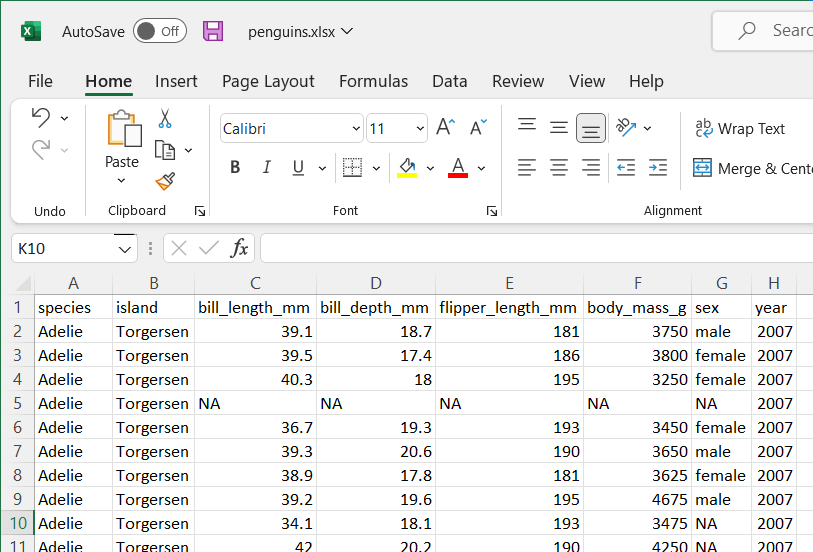

require(tidyverse)
require(magrittr)4 Reading data into R
You can lean R with the dataset it comes with when you install it in your machine. But sometimes you want to use the real data you or someone gathered already. One of critical steps for data processing is to import data with special format into R workspace.Data import refers to read data from the working directory into the workspace (Wickham and Hester 2020). In this chapter you will learn how to import common files into R. We will only focus on two common types of tabular data storage format—The comma-seprated .csv and excell spreadsheet (.xlsx). In later chapter we will explain how to read other types of data into R.
Transferring data from one place to another is always fraught with danger. Expecting it to always be smooth is just setting yourself up for disappointment. But sometimes getting data into R does go smoothly.
If you are trying to get rectangular data (something that looks like a matrix or a data frame) into R, then the read.table function or one of its relatives will be what you want to use. This function returns a data frame. Note: a data frame, not a matrix.
The two common rectangular data are:
- comma-separated file
- tab-separated file
Both of the above assume that the data are of a rectangular form. In the unlikely event you have non-rectangular data to read in, that is possible as well but the best way to do that depends on the form of your data.
4.1 Getting Data into R
Much of the data we download or receive from researchers is in the form of delimited files. Whether that be a comma separated (csv) or a tab delimited file, there are multiple functions that can read these data into R. We will stick to loading these data from the tidyverse packages but be aware these are not the only methods for doing this. We will use the tidyverse functions just to maintain consistency with everything else we do.
The first package in tidyverse we will use is called readr (Wickham and Hester 2020), which is a collection of functions to load the tabular data from working directory in our machine into R session. Some of its functions include:
read_csv(): comma separated (CSV) filesread_tsv(): tab separated filesread_delim(): general delimited filesread_fwf(): fixed width filesread_table(): tabular files where columns are separated by white-space.read_log(): web log files- readxl reads in Excel files.
Before we import the data, we need to load the packages that we will use their functions in this chapter
4.2 Dataset
For us to demonstrate how to import data into R, we are going to use the penguin dataset Figure fig-penguins. The penguin dataset is a collection of images of penguin colonies in Antarctica coming from the larger penguin watch project, which was setup with the purpose of monitoring their changes in population. The images are taken by fixed cameras in over 40 different locations, which have been capturing an image per hour for several years. In order to track the colony sizes, the number of penguins in each of the images in the dataset is required. So far, the penguin count has been done with the help of citizen scientists on the Penguin Watch site by Zooniverse, where interested users can place dots on top of the penguins. Here we release part of this data to the vision community in order to learn from the crowd-sourced dot-annotations to automatically annotate these images.

4.3 Comma-Separated (.csv)
The most commonly format that R like is the comma-separated files. Although Base R provides various functions like read.table(), read.csv(), read.table() and read.csv2() to import data from the local directories into R workspace, for this book we use an read_csv() function from readr. If you have a tabular data stored in your working directory as.csv format, You simply import it into R with the read_csv() and specify the path to the file in your working directory as:
penguins = readr::read_csv(file = "assets/penguins.csv")To visualize the data we just imported, we simply type the name in console and click ENTER
penguins# A tibble: 344 x 8
species island bill_length_mm bill_depth_mm flipper_~1 body_~2 sex year
<chr> <chr> <dbl> <dbl> <dbl> <dbl> <chr> <dbl>
1 Adelie Torgersen 39.1 18.7 181 3750 male 2007
2 Adelie Torgersen 39.5 17.4 186 3800 fema~ 2007
3 Adelie Torgersen 40.3 18 195 3250 fema~ 2007
4 Adelie Torgersen NA NA NA NA <NA> 2007
5 Adelie Torgersen 36.7 19.3 193 3450 fema~ 2007
6 Adelie Torgersen 39.3 20.6 190 3650 male 2007
7 Adelie Torgersen 38.9 17.8 181 3625 fema~ 2007
8 Adelie Torgersen 39.2 19.6 195 4675 male 2007
9 Adelie Torgersen 34.1 18.1 193 3475 <NA> 2007
10 Adelie Torgersen 42 20.2 190 4250 <NA> 2007
# ... with 334 more rows, and abbreviated variable names 1: flipper_length_mm,
# 2: body_mass_gBy simply print the loaded dataset, we a tabular shape data frame with eight variables (fields) and 344 rows (records).
4.4 Microsoft Excel(.xlsx)
Commonly our data is stored as a MS Excel file. we can import the file with read_xlsx() function of readxl package. The readxl package provides a function read_exel() that allows us to specify which sheet within the Excel file to read and what character specifies missing data (it assumes a blank cell is missing data if you don’t specifying anything). The function automatically convert the worksheet into a .csv file and read it. Let’s us import the the data in first sheet of the primary_productivity.xlsx. The dataset contain primary productivity value. We will use this file to illustrate how to import the excel file into R workspace with readxl package (Wickham and Bryan 2019).
penguins = readxl::read_excel("assets/penguins.xlsx")
penguins# A tibble: 344 x 8
species island bill_length_mm bill_depth~1 flipp~2 body_~3 sex year
<chr> <chr> <chr> <chr> <chr> <chr> <chr> <dbl>
1 Adelie Torgersen 39.1 18.7 181 3750 male 2007
2 Adelie Torgersen 39.5 17.39999999~ 186 3800 fema~ 2007
3 Adelie Torgersen 40.299999999999997 18 195 3250 fema~ 2007
4 Adelie Torgersen NA NA NA NA NA 2007
5 Adelie Torgersen 36.700000000000003 19.3 193 3450 fema~ 2007
6 Adelie Torgersen 39.299999999999997 20.6 190 3650 male 2007
7 Adelie Torgersen 38.9 17.8 181 3625 fema~ 2007
8 Adelie Torgersen 39.200000000000003 19.60000000~ 195 4675 male 2007
9 Adelie Torgersen 34.1 18.10000000~ 193 3475 NA 2007
10 Adelie Torgersen 42 20.2 190 4250 NA 2007
# ... with 334 more rows, and abbreviated variable names 1: bill_depth_mm,
# 2: flipper_length_mm, 3: body_mass_gBy printing the penguin dataset imported with read_excel, we notice that the that some of the variable in the dataset columns were imported as character while they are suppose to be numerical.
4.5 Writing t a File
Sometimes you work in the document and you want to export to a file. readr has write_csv() and write_tsv() functions that allows to export data frames from workspace to working directory
write_csv(x = penguins, path = "assets/penguins_clean.csv")Wickham and Bryan (2019) recommend the use of write_excel_csv() function when you want to export a data frame to Excel. readr has other tools that export files to other software like SAS, SPSS and more …
write_excel_csv(x = penguins, path = "assets/penguins_clean.csv")4.6 Basic Data Manipulation
In this section, we briefly introduce some basic data handling and manipulation techniques, which are mostly associated with data frame. A data frame is a a tabular shaped contains columns and rows of equal length. In general a data frame structure with rows representing observations or measurements and with columns containing variables.
4.6.1 Explore the Data Frame
We can visualize the table by simply run the name of the data flights
octopus = read_csv("assets/octopus_data.csv")Rows: 1079 Columns: 10
-- Column specification --------------------------------------------------------
Delimiter: ","
chr (4): village, port, ground, sex
dbl (5): dml, tl, weight, lat, lon
date (1): date
i Use `spec()` to retrieve the full column specification for this data.
i Specify the column types or set `show_col_types = FALSE` to quiet this message.we can use class() to check if the data is data frame
octopus %>% class()[1] "spec_tbl_df" "tbl_df" "tbl" "data.frame" We can use names() to extract the variable names
octopus %>% names() [1] "date" "village" "port" "ground" "sex" "dml" "tl"
[8] "weight" "lat" "lon" We can explore the internal structure of flights object with a dplyr()’s function glimpse()
octopus %>% glimpse()Rows: 1,079
Columns: 10
$ date <date> 2018-02-12, 2018-01-30, 2018-02-01, 2018-01-21, 2018-03-03, 2~
$ village <chr> "Somanga", "Bwejuu", "Somanga", "Somanga", "Somanga", "Somanga~
$ port <chr> "Mbuyuni", "Kusini", "Mbuyuni", "Mbuyuni", "Mbuyuni", "Mbuyuni~
$ ground <chr> "CHAMBA CHA MACHANGE", "NYAMALILE", "BANIANI", "CHAMBA CHA SEL~
$ sex <chr> "F", "M", "M", "M", "M", "F", "M", "M", "M", "F", "F", "F", "M~
$ dml <dbl> 14.0, 14.5, 17.0, 20.0, 12.0, 16.0, 15.0, 17.0, 12.0, 12.0, 9.~
$ tl <dbl> 110.0, 115.0, 115.0, 130.0, 68.0, 90.0, 96.0, 110.0, 79.0, 84.~
$ weight <dbl> 1.385, 1.750, 1.000, 2.601, 0.670, 0.870, 1.020, 1.990, 0.730,~
$ lat <dbl> -8.397838, -7.915809, -8.392644, -8.391614, -8.391146, -8.3881~
$ lon <dbl> 39.28079, 39.65424, 39.28153, 39.28089, 39.28251, 39.28196, 39~We can check how rows (observations/measurements) and columns (variables/fields) are in the data
octopus %>% dim()[1] 1079 10The number of rows (observation) can be obtained using nrow() function
octopus %>% nrow()[1] 1079The number of columns (variables) can be obtained using ncol() function
octopus %>% ncol()[1] 10The length of the data frame is given by
octopus %>% length()[1] 10Count the number of sample at each sex of octopus
octopus %$% table(sex) sex
F M
581 498 Count the number and compute the proportion of sample at each sex of octopus
octopus %$% table(sex) %>% prop.table() %>% round(digits = 2)sex
F M
0.54 0.46 4.6.2 Simple summary statistics
The most helpful function for for summarizing rows and columns is summary(), which gives a collection of basim cummary statistics. The first method is to calculate some basic summary statistics (minimum, 25th, 50th, 75th percentiles, maximum and mean) of each column. If a column is categorical, the summary function will return the number of observations in each category.
octopus %>% summary() date village port ground
Min. :2017-12-18 Length:1079 Length:1079 Length:1079
1st Qu.:2018-01-14 Class :character Class :character Class :character
Median :2018-01-20 Mode :character Mode :character Mode :character
Mean :2018-01-26
3rd Qu.:2018-02-15
Max. :2018-03-12
sex dml tl weight
Length:1079 Min. : 6.0 Min. : 11.00 Min. :0.055
Class :character 1st Qu.:10.0 1st Qu.: 68.00 1st Qu.:0.600
Mode :character Median :12.0 Median : 82.00 Median :0.915
Mean :12.8 Mean : 86.01 Mean :1.232
3rd Qu.:15.0 3rd Qu.:100.00 3rd Qu.:1.577
Max. :24.0 Max. :180.00 Max. :5.210
lat lon
Min. :-8.904 Min. : 0.00
1st Qu.:-8.523 1st Qu.:39.28
Median :-8.392 Median :39.50
Mean :-8.069 Mean :38.69
3rd Qu.:-7.973 3rd Qu.:39.67
Max. : 0.000 Max. :39.75 You noticed that the summary() function provide the common metric for central tendency and measure of dispersion. We will look at them later. Now we turn to our favorite package for data manipulation dplyr (Wickham et al. 2021).
References
Wickham, Hadley, and Jennifer Bryan. 2019. Readxl: Read Excel Files. https://CRAN.R-project.org/package=readxl.
Wickham, Hadley, Romain François, Lionel Henry, and Kirill Müller. 2021. Dplyr: A Grammar of Data Manipulation. https://CRAN.R-project.org/package=dplyr.
Wickham, Hadley, and Jim Hester. 2020. Readr: Read Rectangular Text Data. https://CRAN.R-project.org/package=readr.